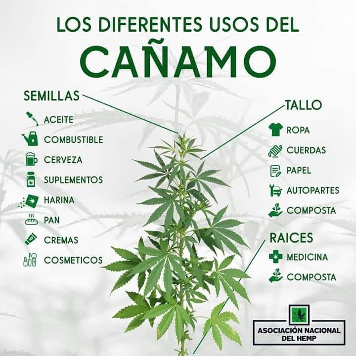

Comprar
Solicitar venta y cotizaciónUsos y productos
Usos del cañamo
Cañamo en la construcción
Ropa de cáñamo (click aqui)

Beneficios del cañamo en el uso diario y producción
La planta del cañamo tiene el beneficios de poder transformarse en diversas formas de materiales para el uso cotidiano, tanto como el industrial, teniendo de por medio que su reporudcción es menos costosa tanto en recursos, como en dinero; así siendo su producción de 3 a 4 veces mayor que el maíz, mejorando de paso la calidad de la tierra debido a que sus raices son muy profundas, mejorando la estructura del suelo, absorbe mas dioxido de carbono, bajo consumo de agua, teniendo beneficio de mayor ganancia para los agricultores.